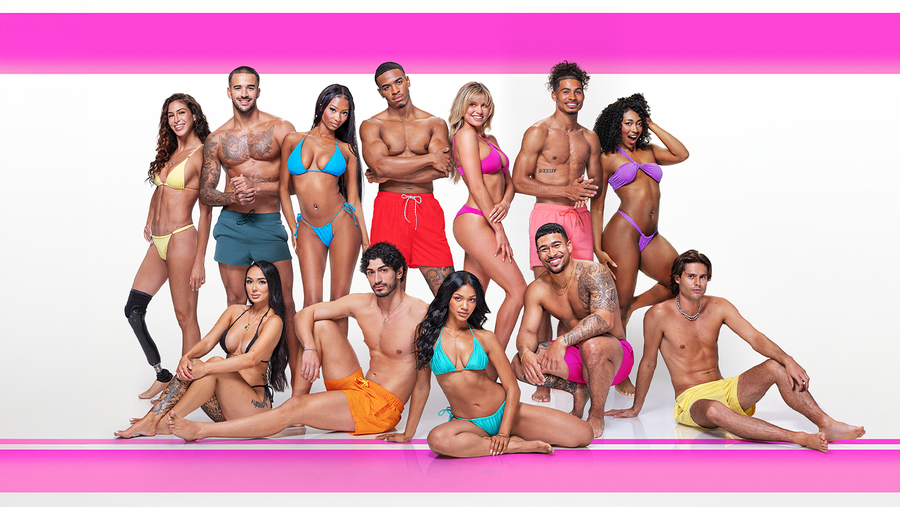

Season 8 · Fiji · 2026 · Fan Dashboard
All the data, drama, and digital chaos from the villa — through Ep. 7 · Peacock Thu–Tue · Aftersun w/ Ciara Miller & Tefi Pessoa · Finale projected July 12

The first public vote (10:30 PM–1:30 AM ET) caused the Love Island app to crash globally at ~9 PM ET as the episode aired. The unprecedented spike in voter registration and phone verification requests overwhelmed the database. Peacock extended the voting window by 13.5 hours, closing polls at 3 PM ET on June 10.
📱 Instagram Growth
first week of season